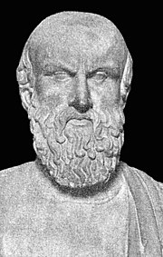

Ésquilo
Dramaturco

Resumo da biografia de Ésquilo
Ésquilo (525 a.C. - 456 a.C.) foi um poeta grego antigo, considerado o pai da tragédia grega. Ele nasceu em Eleusis, perto de Atenas, e morreu em Gela, na Sicília. Ésquilo escreveu mais de 90 peças, mas apenas 7 sobreviveram até hoje. As peças mais famosas de Ésquilo são Os Persas, A Oresteia e Os Sete Contra Tebas. Os Persas é uma peça histórica que conta a história da derrota dos persas pelos gregos na Batalha de Salamina. A Oresteia é uma trilogia que conta a história de Orestes, que é obrigado a matar sua mãe, Clitemnestra, para vingar a morte de seu pai, Agamenon. Os Sete Contra Tebas é uma peça que conta a história dos sete príncipes que se levantam contra o governo de seu irmão, Eteocles. Ésquilo foi um pioneiro no desenvolvimento da tragédia grega. Ele foi o primeiro a usar um coro de 12 pessoas e a introduzir o uso de máscaras. Ele também foi o primeiro a usar um cenário realista e a desenvolver o uso de diálogos e monólogos. As peças de Ésquilo são cheias de ação, suspense e emoção. Elas exploram temas como o destino, a vingança e a justiça. Ésquilo é considerado um dos maiores poetas da história da literatura ocidental. Sua obra teve uma profunda influência na dramaturgia ocidental e continua a ser lida e representada até hoje.Linha do tempo
525 a.C Ésquilo nasceu em Eleusis, perto de Atenas, em 525 a.C.
Filiação Ele era filho de um rico proprietário de terras e se tornou um soldado aos 16 anos.
490 a.C-480 a.C. Ele lutou na Batalha de Maratona em 490 a.C. e na Batalha de Salamina em 480 a.C.
480 a.C. Começa a escrever peças de teatro
472 a.C. Escreve Os Persas
458 a.C Escreve A Oresteia
467 a.C. Escreve Os Sete Contra Tebas
456 a.C. Morre em Gela, na Sicília
Se quiser saber mais sobre Albert Einstein, Clique Aqui
Fontes utilizadas na página: wikipedia